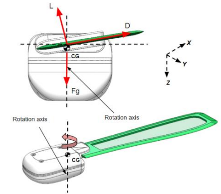

Optimization of Planform Area of Monoblade (6-DOF Simulation)
An element-based computational method was employed to optimize the planform of the geometry by maximizing the coefficient of power using MATLAB. While the 6-DOF dynamic model of the pod through SIMULINK was used to reduce the drift in all axis.

CANSAT
CanSat is a student-oriented engineering competition organized by the American Astronautical Society (AAS), designed to provide participants with hands-on experience in aerospace engineering and space-related projects. In this annual competition, student teams are challenged to design, build, and launch a small satellite, known as a CanSat, that fits within the size constraints of a standard soda can. The CanSat must incorporate various sensors and communication systems to accomplish a specific mission, such as collecting and transmitting data during its descent back to Earth. This annual competition is open to teams from universities and colleges. Teams must be able to design and build a space-type system, following the approved competition guide, and then compete against each at the end of two semesters to determine the winners. Rockets will be provided but teams are responsible for funding the construction of their CanSat and all travel/lodging expenses.
CANSAT 2021-2022 Mission Statement
- To design a CanSat consisting of a container and two auto-rotating maple seed science payloads. The Cansat will be launched to an altitude ranging 670 meters to 725 meters. CanSat container must hold and protect the science payloads during launch and deployment.
- To deploy the parachute of the container and descend at the rate of 15 m/s.
- To design a deployment mechanism to release one of the science payload at 500 meters and other at 400 meters.
- To design the auto-rotating maple seed which shall descend at a rate less than 20m/s.
- To monitor air pressure, air temperature, and rotation rate for the science payload and transmit to data to container.
- To monitor and transmit altitude, battery voltage and GPS position for the CanSat Container.
Optimization of Planform Area of Monoblade (6-DOF Simulation)
An element-based computational method based on Glauert's blade element momentum theory (BEMT) model was employed to estimate the geometry by maximizing the coefficient of power through MATLAB's optimization toolbox using the Sequential quadratic programming (SQP) solver. The dynamic model was developed for the single-wing design through the MATLAB Simulink 6-DOF toolbox to carry out a free-flight simulation of the wing to verify its global stability.
The paper published in ASME IMECE2021 Conference, titled Design Optimization of Monoblade Autorotating Pods to Exhibit an Unconventional Descent Technique Using Glauert's Modeling details all the technical and theoritacal aspect of the optmization.
CANSAT CDR
The Critical Design Review (CDR) for the 2021 CanSat encapsulates a comprehensive overview of the project's intricacies and planning. The introduction sets the stage for the document, outlining the purpose and objectives of the CanSat initiative. The system overview delves into the holistic design, elucidating the key components and their intended interactions. The CDR systematically dissects the CanSat's architecture, beginning with the sensor subsystem design, providing insights into the selection and integration of sensors crucial for the mission's success. The descent control system, an essential element, is thoroughly discussed, followed by the mechanical subsystem design, detailing the structural components and their functionalities. The communication and data handling subsystem design elucidates how information is transmitted and processed, ensuring effective data collection. The electrical power subsystem design focuses on the CanSat's energy requirements and power distribution. Flight software design explains the coding and algorithms crucial for mission execution. The ground control system design outlines how the CanSat is controlled and monitored from the ground. The document proceeds to the integration and testing phase, emphasizing the meticulous steps taken to ensure the CanSat's functionality. Mission operations and analysis cover the execution and post-mission assessment. Requirement compliance serves as a critical section, verifying adherence to specified criteria. In essence, this CDR encapsulates the exhaustive planning, design, and testing undertaken for the 2021 CanSat, offering a detailed roadmap of its conception and execution.